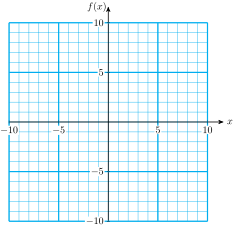
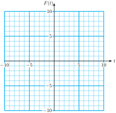
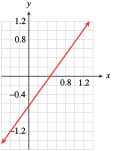
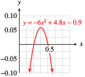
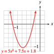
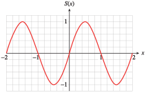
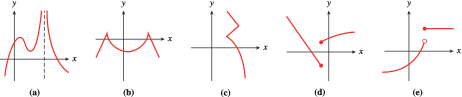
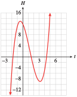

Subsection5.2.1Reading Function Values from a Graph
The graph below shows the Dow-Jones Industrial Average (the average value of the stock prices of 500 major companies) recorded at noon each day during the stock market correction around October 10, 1987 ("Black Monday").
The graph describes a function because there is only one value of the output, DJIA, for each value of the input, \(t\text{.}\) There is no formula that gives the DJIA for a particular day; but it is still a function, defined by its graph. The value of \(f(t)\) is specified by the vertical coordinate of the point with the given \(t\)-coordinate.
Example5.2.1.
The coordinates of point \(P\) on the DJIA graph are \((15, 2412)\text{.}\) What do the coordinates tell you about the function \(f\text{?}\)
If the DJIA was 1726 at noon on October 20, what can you say about the graph of \(f\text{?}\)
Solution.
The coordinates of point \(P\) tell us that \(f(15) = 2412\text{,}\) so the DJIA was 2412 at noon on October 15.
We can say that \(f(20) = 1726\text{,}\) so the point \((20, 1726)\) lies on the graph of \(f\text{.}\) This point is labeled \(Q\) in the figure above.
The coordinates of each point on the graph of the function give the output for a specific input.
Graph of a Function.
The point \((a, b)\) lies on the graph of the function \(f\) if and only if \(f(a)=b\text{.}\)
Checkpoint5.2.2.Practice 1.
The water level in Lake Huron alters unpredictably over time. The graph below gives the average water level, \(L=f(t)\text{,}\) in meters in the year \(t\) over a 20-year period. (Source: The Canadian Hydrographic Service)
The coordinates of point \(H\) on the graph are \((1997, 176.98)\text{.}\) What do the coordinates tell you about the function \(f\text{?}\)
\(f(1997) = 176.98\text{;}\) the average water level was 176.98 meters in 1997.
\(f(176.98) = 176.98\text{;}\) the average water level was 176.98 meters in 1997.
The average water level in \(2004\) was \(176.11\) meters. Write this fact in function notation. What can you say about the graph of \(f\text{?}\)
\(f(176.11) = 2004\text{.}\) The point \((176.11, 2004)\) lies on the graph of \(f\text{.}\)
\(f(2004) = 176.11\text{.}\) The point \((2004, 176.11)\) lies on the graph of \(f\text{.}\)
Answer1.
\(\text{Choice 1}\)
Answer2.
\(\text{Choice 2}\)
Solution.
\(f(1997) = 176.98\text{;}\) the average water level was \(176.98\) meters in \(1997\text{.}\)
\(f(2004) = 176.11\text{.}\) The point \((2004, 176.11)\) lies on the graph of \(f\text{.}\)
The second coordinate of a point on the graph is the function value for the first coordinate.
Functions and Coordinates.
Each point on the graph of the function \(f\) has coordinates \((x, f(x))\) for some value of \(x\text{.}\)
Checkpoint5.2.3.QuickCheck 1.
True or False.
If \((12,5)\) lies on the graph of \(f\text{,}\) then \(f(5)=12\text{.}\)
True
False
If \(g(p)=w\text{,}\) then \((p,w)\) lies on the graph of \(g\text{.}\)
True
False
We can find the function value at \(x\) by finding the \(x\)-coordinate of the corresponding point on the graph of \(f\text{.}\)
True
False
Every \(y\)-coordinate on the graph of \(F\) represents a function value for \(F\text{.}\)
True
False
Answer1.
\(\text{False}\)
Answer2.
\(\text{True}\)
Answer3.
\(\text{False}\)
Answer4.
\(\text{True}\)
Solution.
False
True
False
True
Example5.2.4.
The figure shows the graph of a function \(g\text{.}\)
Find \(g(-2)\) and \(g(5)\text{.}\)\(~\alert{\text{[TK]}}\)
For what value(s) of \(t\) is \(g(t) = -2\text{?}\)
What is the largest, or maximum, value of \(g(t)\text{?}\) For what value of \(t\) does the function take on its maximum value?
On what intervals is \(g\) increasing?
Solution.
To find \(g(-2)\text{,}\) we look for the point with \(t\)-coordinate \(-2\text{.}\) The point \((-2, 0)\) lies on the graph of \(g\text{,}\) so \(g(-2) = 0\text{.}\) Similarly, the point \((5, 1)\) lies on the graph, so \(g(5) = 1\text{.}\)
We look for points on the graph with \(y\)-coordinate \(-2\text{.}\) Because the points \((-5, -2)\text{,}\)\((-3, -2)\text{,}\) and \((3, -2)\) lie on the graph, we know that \(g(-5) = -2\text{,}\)\(g(-3) = -2\text{,}\) and \(g(3) = -2\text{.}\) Thus, the \(t\)-values we want are \(-5\text{,}\)\(-3\text{,}\) and \(3\text{.}\)
The highest point on the graph is \((1, 4)\text{,}\) so the largest \(y\)-value is \(4\text{.}\) Thus, the maximum value of \(g(t)\) is \(4\text{,}\) and it occurs when \(t = 1\text{.}\)
A graph is increasing if the \(y\)-values get larger as we read from left to right. The graph of \(g\) is increasing for \(t\)-values between \(-4\) and \(1\text{,}\) and between \(3\) and \(5\text{.}\) Thus, \(g\) is increasing on the intervals \((-4, 1)\) and \((3, 5)\text{.}\)
Checkpoint5.2.5.QuickCheck 2.
True or False.
A graph is called increasing if its \(x\)-values increase.
True
False
The maximum function value is the \(y\)-coordinate of the highest point on the graph.
True
False
If we say that \(f\) is increasing on the interval \((2,7)\text{,}\) we mean that the function values increased from 2 to 7.
True
False
It is not possible for a function of \(x\) to take on the same value at two different \(x\)-values.
True
False
Answer1.
\(\text{False}\)
Answer2.
\(\text{True}\)
Answer3.
\(\text{False}\)
Answer4.
\(\text{False}\)
Solution.
False
True
False
False
Checkpoint5.2.6.Practice 2.
Refer to the graph of the function \(g\) shown in Example 5.2.4.
\(g(0)=\)
List the value(s) of \(t\) for which \(g(t) = 0 \text{.}\) Separate different values with commas.
What is the smallest, or minimum, value of \(g(t) \text{?}\)
Minimum:
For what value of \(t\) does the function take on its minimum value?
\(t=\)
Select all the intervals listed below where \(g\) is decreasing.
From \(-5\) to \(-4\text{?}\)
Yes
No
From \(-5\) to \(-2\text{?}\)
Yes
No
From 2 to 4?
Yes
No
From 1 to 3?
Yes
No
Answer1.
\(3\)
Answer2.
\(-2, 2, 4\)
Answer3.
\(-3\)
Answer4.
\(-4\)
Answer5.
\(\text{Yes}\)
Answer6.
\(\text{No}\)
Answer7.
\(\text{No}\)
Answer8.
\(\text{Yes}\)
Solution.
\(\displaystyle 3\)
\(\displaystyle -2, 2, 4\)
\(-3 \text{;}\)\(t = -4\)
\((-5, -4)\) and \((1, 3)\)
Subsection5.2.2Constructing the Graph of a Function
We can construct a graph for a function described by a table or an equation. We make these graphs the same way we graph equations in two variables: by plotting points whose coordinates satisfy the equation.
Example5.2.7.
Graph the function \(f(x) = \sqrt{x + 4}\)
Solution.
We choose several convenient values for \(x\) and evaluate the function to find the corresponding \(f(x)\)-values. For this function we cannot choose \(x\)-values less than \(-4\text{,}\) because the square root of a negative number is not a real number.
Points on the graph have coordinates \((x, f(x))\text{,}\) so the vertical coordinate of each point is given by the value of \(f(x)\text{.}\) We plot the points and connect them with a smooth curve, as shown in the figure. Notice that no points on the graph have \(x\)-coordinates less than \(-4\text{.}\)
Checkpoint5.2.8.QuickCheck 3.
How do we find the value of \(f(3)\) from a graph of \(f\text{?}\)
Find 3 on the \(x\)-axis, move vertically to the point, then horizontally to the \(y\)-axis.
Find 3 on the \(y\)-axis, move horizontally to the point, then vertically to the \(x\)-axis.
Substitute 3 for \(x\) into the formula for the function.
Substitute 3 for \(y\) into the formula for the function.
Answer.
\(\text{Choice 1}\)
Solution.
Find 3 on the \(x\)-axis, move vertically to the point, then horizontally to the \(y\)-axis.
Technology5.2.9.Using Technology to Graph a Function.
We can also use a graphing utility to obtain a table and graph for the function in Example 5.2.7. We graph a function just as we graphed an equation. For this function, we enter
and press ZOOM\(6\) for the standard window. Your calculator does not use the \(f(x)\) notation for graphs, so we will continue to use \(Y_1,~ Y_2,\) etc. for the output variable. Don’t forget to enclose \(x+4\) in parentheses, because it appears under a radical. The graph is shown below.
Checkpoint5.2.10.Practice 3.
Let \(f(x) = {x^{3}-2}\)
Complete the table of values and sketch a graph of the function.
\(x\)
\(-2\)
\(-1\)
\(-\frac{1}{2}\)
\(0\)
\(\frac{1}{2}\)
\(1\)
\(2\)
\(f(x)\)
Answer1.
\(-10\)
Answer2.
\(-3\)
Answer3.
\(-{\frac{17}{8}}\)
Answer4.
\(-2\)
Answer5.
\(-{\frac{15}{8}}\)
Answer6.
\(-1\)
Answer7.
\(6\)
Solution.
\(x\)
\(-2\)
\(-1\)
\(-\frac{1}{2}\)
\(0\)
\(\frac{1}{2}\)
\(1\)
\(2\)
\(f(x)\)
\(-10\)
\(-3\)
\(\frac{-17}{8}\)
\(-2\)
\(\frac{-15}{8}\)
\(-1\)
\(6\)
The graph is shown below.
\(f(x)=x^3-2\)
Subsection5.2.3The Vertical Line Test
In a function, two different outputs cannot be related to the same input. This restriction means that two different ordered pairs cannot have the same first coordinate. What does it mean for the graph of the function?
Consider the graph shown in Figure (a). Every vertical line intersects the graph in at most one point, so there is only one point on the graph for each \(x\)-value. This graph represents a function.
In Figure (b), however, the line \(x=2\) intersects the graph at two points, \((2,1)\) and \((2,4)\text{.}\) Two different \(y\)-values, 1 and 4, are related to the same \(x\)-value, 2. This graph cannot be the graph of a function.
The Vertical Line Test.
A graph represents a function if and only if every vertical line intersects the graph in at most one point.
Example5.2.11.
Use the vertical line test to decide which of the graphs in the figure represent functions.
Solution.
Graph (a) represents a function, because it passes the vertical line test.
Graph (b) is not the graph of a function, because the vertical line at (for example) \(x = 1\) intersects the graph at two points.
For graph (c), notice the break in the curve at \(x = 2\text{:}\) The solid dot at \((2, 1)\) is the only point on the graph with \(x = 2\text{;}\) the open circle at \((2, 3)\) indicates that \((2, 3)\) is not a point on the graph. Thus, graph (c) is a function, with \(f(2) = 1\text{.}\)
Checkpoint5.2.12.QuickCheck 4.
What does the vertical line test tell us?
A) If the graph is a vertical line.
B) If the graph is increasing.
C) If the graph is decreasing.
D) If the graph is a function.
Answer.
\(\text{D) If ... a function.}\)
Solution.
The vertical line test tells us if the graph is a function.
Checkpoint5.2.13.Practice 4.
Use the vertical line test to determine which of the graphs below represent functions.
(a)
(b)
(c)
None of the above
Answer.
\(\text{(b)}\)
Solution.
Only (b) is a function.
Subsection5.2.4Graphical Solution of Equations and Inequalities
We have used graphs to solve linear and quadratic equations and inequalities. We can also use a graphical technique to solve equations and inequalities involving other functions.
Example5.2.14.
Use a graph of \(~f(x)=-2x^3 + x^2 + 16x~\) to solve the equation
If we sketch in the horizontal line \(y = 15\text{,}\) we can see that there are three points on the graph of \(f\) that have \(y\)-coordinate \(15\text{,}\) as shown below. The \(x\)-coordinates of these points are the solutions of the equation.
From the graph, we see that the solutions are \(x = -3\text{,}\)\(x = 1\text{,}\) and approximately \(x = 2.5\text{.}\) We can verify each solution algebraically.
For example, if \(x = \alert{-3}\text{,}\) we have
We first locate all points on the graph that have \(y\)-coordinates greater than or equal to \(15\text{.}\) The \(x\)-coordinates of these points are the solutions of the inequality.
The figure below shows the points in red, and their \(x\)-coordinates as intervals on the \(x\)-axis. The solutions are \(x \le -3\) and \(1\le x \le 2.5\text{,}\) or in interval notation, \((-\infty, -3] \cup [1, 2.5]\text{.}\)
To simplify the notation, we sometimes use the same letter for the output variable and for the name of the function. In the next example, \(C\) is used in this way.
Example5.2.19.
TrailGear decides to market a line of backpacks. The cost, \(C\text{,}\) of manufacturing backpacks is a function of the number of backpacks produced, \(x\text{,}\) given by the equation
\begin{equation*}
C=C(x)=3000+20x
\end{equation*}
where \(C(x)\) is in dollars. Find the cost of producing 500 backpacks.
Solution.
To find the value of \(C\) that corresponds to \(x=\alert{500}\text{,}\) we evaluate \(C(\alert{500})\text{:}\)
The volume of a sphere of radius \(r\) centimeters is given by
\begin{equation*}
V = V(r) = \frac{4}{3}\pi r^3
\end{equation*}
Evaluate \(V(10)\) and explain what it means.
\(V(10)=\), which represents
A) the volume (in cm) of a sphere whose radius is 10 cu. cm
B) the radius (in cm) of a sphere whose volume is 10 cm
C) the volume (in sq. cm) of a sphere whose radius is 10 cm
D) the volume (in cu. cm) of a sphere whose radius is 10 cm
Answer1.
\(4188.79\)
Answer2.
\(\text{D) the ... is 10 cm}\)
Solution.
\(V(10) = 4000\pi/3\approx 4188.79 \text{ cm}^3\) is the volume of a sphere whose radius is 10 cm.
Exercises5.2.6Problem Set 5.2
Warm Up
Exercise Group.
For problems 1–4, sketch a graph of the linear or quadratic function by hand, and label the significant points.
1.
\(f(x)=3x-4\)

2.
\(F(t)=\dfrac{-3}{4}t + 6\)

3.
\(p(t)=3-t^2\)
4.
\(g(w)=(w+2)^2\)
5.
Use the graph of \(~y=1.4x-0.64~\) to solve the inequalities. Show your method on the graph.
\(\displaystyle 1.4x-0.64 \gt 0.2\)

\(\displaystyle -1.2 \gt1.4x-0.64 \)
6.
Use the graphs to solve the inequalities. Show your method on the graph.
\(\displaystyle -6x^2+4.8x-0.9 \ge 0\)

\(\displaystyle 5x^2+7.5x+1.8 \le 0\)

Skills Practice
Exercise Group.
For Problems 7–10,
Make a table of values and sketch a graph of the function by plotting points. (Use the suggested \(x\)-values.)
Use your calculator to make a table of values and to graph the function. Compare the calculator’s graph with your sketch.
7.
\(g(x)=x^3+4\)
\(x = -2, -1, \dots, 2\)
8.
\(h(x)=2+\sqrt{x}\)
\(x = 0, 1, \dots, 9\)
9.
\(G(x)=\sqrt{4-x}\)
\(x = -5, -4, \dots, 4\)
10.
\(w(x)=x^3-8x\)
\(x = -4, -3, \dots, 4\)
Applications
Exercise Group.
For Problems 11–14, use the graph.
11.
Find \(h(-3), ~h(1),\) and \(h(3)\text{.}\)
For what value(s) of \(z\) is \(h(z)=3\text{?}\)
Find the intercepts of the graph. List the function values given by the intercepts.
What is the maximum value of \(h(z)\text{?}\)
For what value(s) of \(z\) does \(h\) take on its maximum value?
On what intervals is the function increasing? Decreasing?
12.
Find \(R(1)\) and \(R(3)\text{.}\)
For what value(s) of \(p\) is \(R(p)=2\text{?}\)
Find the intercepts of the graph. List the function values given by the intercepts.
Find the maximum and minimum values of \(R(p)\text{.}\)
For what value(s) of \(p\) does \(R\) take on its maximum and minimum values?
On what intervals is the function increasing? Decreasing?
13.

Find \(S(0), ~S\left(\dfrac{1}{6}\right),\) and \(S(-1)\text{.}\)
Estimate the value of \(S\left(\dfrac{1}{3}\right)\) from the graph.
For what value(s) of \(x\) is \(S(x)=\dfrac{-1}{2}\text{?}\)
Find the maximum and minimum values of \(S(x)\text{.}\)
For what value(s) of \(x\) does \(S\) take on its maximum and minimum values?
On what intervals is the function increasing? Decreasing?
14.
Find \(F(-3),~F(-2)\) and \(F(2)\text{.}\)
For what value(s) of \(s\) is \(F(s)=-1\text{?}\)
Find the maximum and minimum values of \(F(s)\text{.}\)
For what value(s) of \(s\) does \(F\) take on its maximum and minimum values?
15.
The graph shows the speed of sound in the ocean as a function of depth, \(S = f (d)\text{.}\) The speed of sound is affected both by increasing water pressure and by dropping temperature. (Source: Scientific American)
Evaluate \(f(1000)\) and explain its meaning.
Solve \(f(d) = 1500\) and explain its meaning.
At what depth is the speed of sound the slowest, and what is the speed? Write your answer with function notation.
Describe the behavior of \(f(d)\) as \(d\) increases.
16.
The figure shows the temperature of the ocean at various depths.
Is depth a function of temperature?
Is temperature a function of depth?
The axes in this figure are scaled in an unusual way. Why is it useful to present the graph in this way?
What is the difference in temperature between the surface of the ocean and the deepest level shown?
Over what depths does the temperature change most rapidly?
What is the average rate of change of temperature with respect to depth in the region called the thermocline?
17.
Which of the following graphs represent functions?
18.
Which of the following graphs represent functions?

19.
The figure shows the graph of \(g(x) = \dfrac{12}{2 + x^2}\text{.}\) Use the graph to solve the following equations and inequalities. Show your work on the graph. Write your answers in interval notation.
\(\displaystyle \dfrac{12}{2 + x^2} = 4\)
\(\displaystyle \dfrac{12}{2 + x^2} \gt 4\)
\(\displaystyle 1\le \dfrac{12}{2 + x^2} \le 2\)
\(\displaystyle \dfrac{12}{2 + x^2} \le 6\)
20.
The figure shows the graph of \(H(t)=t^3-4t^2-4t+12\text{.}\) Use the graph to solve the following equations and inequalities. Show your work on the graph. Write your answers to the inequalities in interval notation.

\(\displaystyle t^3-4t^2-4t-12 = -4\)
\(\displaystyle t^3-4t^2-4t-12=17\)
\(\displaystyle t^3-4t^2-4t-12 \lt -4\)
\(\displaystyle t^3-4t^2-4t-12 \gt 6\)
21.
The figure shows a graph of \(M = g(q)\text{.}\)
Find all values of \(q\) for which
\(\displaystyle g(q) = 0\)
\(\displaystyle g(q) = 16\)
\(\displaystyle g(q)\lt 6\)
For what values of \(q\) is \(g(q)\) increasing?
22.
The figure shows a graph of \(P = f(x)\text{.}\)
Find all values of \(x\) for which
\(\displaystyle f(x)=3\)
\(\displaystyle f(x) \gt 4.5\)
\(\displaystyle 2 \le f(x) \le 4\)
For what values of \(x\) is \(f(x)\) increasing?
Exercise Group.
For Problems 23 and 24, graph each function in the "friendly" window